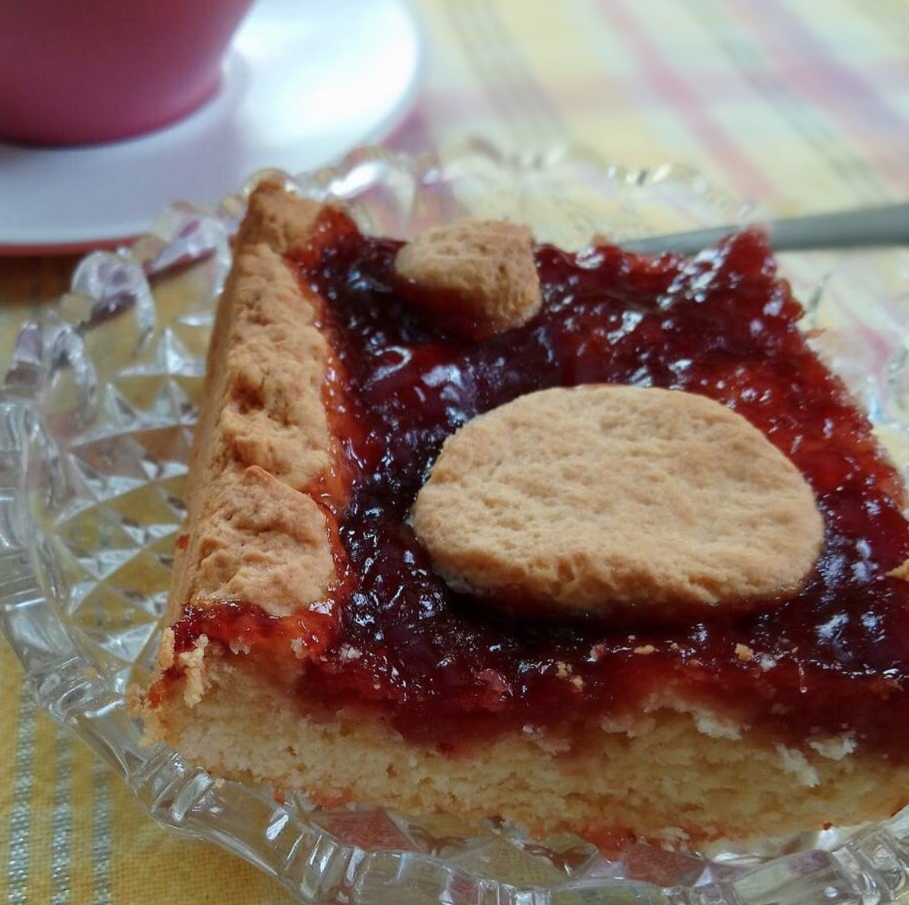

Πάστα φλώρα

Υλικά:
- 1 1/2 πακέτο αλεύρι που φουσκώνει μόνο του
- 2 αυγά
- 250γρ βούτυρο
- 1 ποτήρι κονιάκ
- 1 φλιτζάνι ζάχαρη
- Μαρμελάδα της αρεσκείας σας
Εκτέλεση:
Αναμιγνύετε τα υλικά μέχρι να έχετε μια ομοιόμορφη μαλακή ζύμη που να μην κολλάει στα χέρια.
Κρατάτε το 1/3 της ζύμης για την διακόσμηση.
Βουτηρώνετε ένα πιρέξ και απλώνετε την ζύμη σε λεπτή στρώση μέχρι και την μέση των τοιχωμάτων, στην συνέχεια απλώνετε την μαρμελάδα.
Με την βοήθεια μιας λαδόκολλας ανοίγετε σε φύλλο το 1/3 της ζύμης που κρατήσατε και με στρογγυλά κουπ πατ διαφόρων μεγεθών κόβετε την ζύμη σε κύκλους και καλύπτετε την επιφάνεια την μαρμελάδας.
Φυσικά θα μείνουν πολλά κενά αλλά αυτός είναι ο σκοπός, τα σχέδια.
Ψήνω στον αέρα στους 180oC.